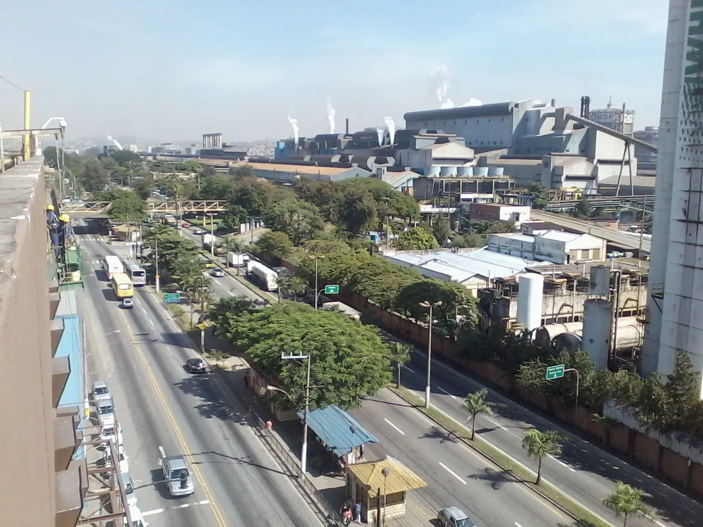

Business connections breakfast
First Tuesday of each month · 8–9 a.m.
Meet local business owners, exchange ideas, and introduce your business to the community.
Location: Aterrado business district.

Volta Redonda · Rio de Janeiro
Local connections. Shared opportunities. Build your next chapter in the Steel City.
Join the chamberPhoto: HenriqueBarraMansa / CC BY-SA 3.0. Resized and converted to WebP; cropped in layout.
First Tuesday of each month · 8–9 a.m.
Meet local business owners, exchange ideas, and introduce your business to the community.
Location: Aterrado business district.
Third Thursday of each month · 6–7:30 p.m.
Explore practical ways to reach customers and strengthen your digital presence.
Location: Vila Santa Cecília.
Sample recurring events for this educational project. Times are local to Volta Redonda.
Volta Redonda, RJ
Loading current weather…
Loading forecast…
Temperature near noon (°C), for the next three days. Volta Redonda local time.
Loading member spotlights…
Meet a rotating selection of our Gold and Silver members. Membership levels are examples for this educational project.